|
 |
|
The Mystery of ASJO.ORG
2026-03-0146 million DNS ANY queries for a Danish man's personal domain, from DoD address space, residential ISPs, and cloud providers across 12 countries. A two-year mystery nobody can explain.
I have an obsession with internet anomalies. Weird traffic patterns, unexplained phenomena in protocol-level data, the kind of stuff that makes you open 40 browser tabs at 2 AM. I run a DNS honeypot cluster — multiple geographically distributed nameservers designed to study internet background noise, scanner behavior, and threat intelligence. Every query that hits these servers is logged — source IP, ASN, query name, record type, protocol, flags, all of it.
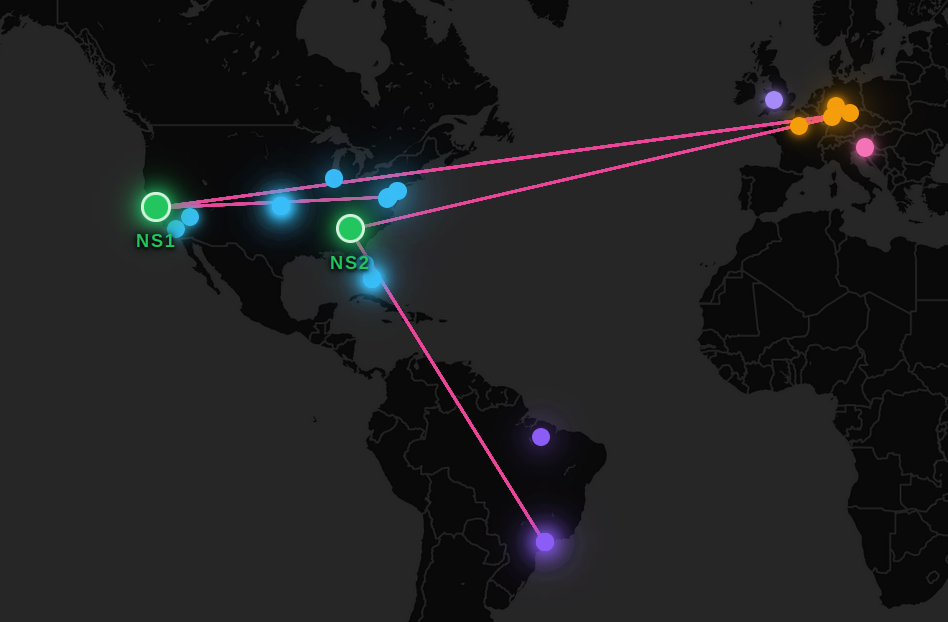
These servers have never been advertised publicly. No zone files reference them. No domain points to them. They exist solely to observe what the internet sends to an open resolver when nobody knows it's there.
I was bored one day and started digging through the honeypot logs. What I found sent me down a rabbit hole that I figured, when all was said and done, was worth writing up.
The Expected Noise
Within 24 hours of spinning up the cluster, traffic began arriving. This was expected. People scan the entire IPv4 address space (0.0.0.0/0) for port 53 constantly. Botnets probe for open resolvers. Researchers enumerate. Scanners scan. This is the background radiation of the internet and exactly what the honeypot was built to capture.
Then something caught my eye. Here are the top 5 queried domains on my honeypot over a 24-hour period:
Top Queries (24h) ───────────────────────────────────────────── 1 asjo.org 462,894 2 pizzaseo.com 3,615 3 subscribe.insight.synology.com 1,266 4 stingbox.twocyber.com 1,096 5 checkipv6.quickconnect.to 1,047
Read that again. The #1 domain has 128x more queries than #2. It's not even close. Everything else on the list is explainable — Synology NAS devices phoning home, security research probes, SEO garbage. And then there's asjo.org, towering above everything else by two orders of magnitude. I brushed it off as "LOL DDOS, MY HONEYPOT IS WORKING!" and simply dropped the IP address using iptables.
46 Million Queries
I woke up one morning to find 46 million DNS queries logged against my nameservers. All of them identical:
Query: asjo.org Type: ANY Class: IN Proto: UDP
Every single one — a DNS ANY request for asjo.org. The source was a DigitalOcean IP address. My first thought was obvious: this is a DNS amplification attack. Someone was using my open resolver to reflect amplified responses at a victim. Classic DDoS playbook. I dropped the IP with iptables and went about my day.
Hours later, it happened again.
The Department of Defense
The next wave came from 33.44.22.33 — an IP address belonging to ASN 749, United States Department of Defense. The 33.0.0.0/8 block has been allocated to the DoD since January 1970.
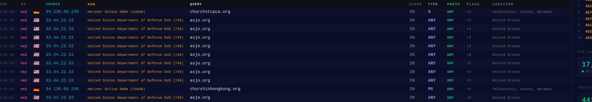
Same query. Same record type. Same domain. ANY for asjo.org, over and over, from a Pentagon IP block.
I dropped that one too. Hours later, the flood resumed from a Comcast residential IP. Then Cox. Then it just kept going.
It's Not Even a Large Response
DNS amplification attacks work because a small query produces a large response. The attacker sends a tiny packet, the resolver replies with something much bigger, and the victim gets hammered with the amplified traffic. The ANY record type is the classic choice because it returns everything — A, AAAA, MX, TXT, NS, SOA, DNSKEY, RRSIG, all of it.
So I ran dig asjo.org ANY myself:
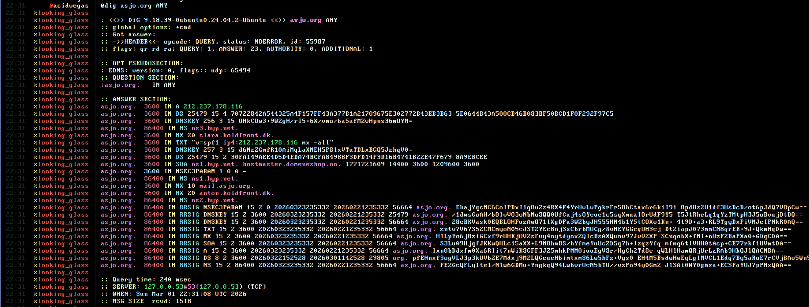
The total response is 1,518 bytes. That's it. For context, domains commonly abused in amplification attacks return responses of 4,000+ bytes. The amplification factor here is mediocre at best. If you were building a DDoS cannon, you would pick almost any other domain.
As the domain owner himself put it on his blog:
"For looking up asjo.org, for crying out loud: the zone is 36 lines long"
36 lines. The entire zone file. This is a personal domain with a handful of records, not a juicy amplification target.
Not a Normal DDoS
At first glance this looks like a textbook DNS reflection attack. But the more I looked at it, the less it made sense:
- Duration — This has been going on for over two years. Reflected DDoS attacks are typically short bursts, not multi-year campaigns.
- Source diversity — The queries come from residential ISPs (Comcast, Cox, Verizon, Sky UK, Orange France), cloud providers (DigitalOcean, Amazon), telecom carriers (AT&T, HKT, HiNet, TransTeleCom), hosting companies, and the United States Department of Defense.
- Single target domain — Always
asjo.org. AlwaysANY. Never anything else. - Legacy address space — The DoD
33.0.0.0/8block is legacy space from the earliest days of the internet. Spoofing it in a reflection attack would send the amplified responses to the DoD, not a useful DDoS target. - Poor amplification — A 1,518 byte response is a terrible choice for amplification when domains returning 4x that size are freely available.
If this were a reflection attack, the attacker would be DDoSing... the Pentagon? For two years? With DNS ANY queries for a Danish man's personal domain that returns 1.5 KB? It doesn't add up.
The Domain Owner Knows
asjo.org belongs to Adam Sjøgren, a Danish developer who runs his own infrastructure. A WHOIS lookup shows the domain was created on May 17, 2002 — he's owned it for over two decades. The domain hosts a personal site with some photographs, a music collection, a few links, and pictures of bread. That's it. A 23-year-old personal domain. This is what's at the center of all of this:
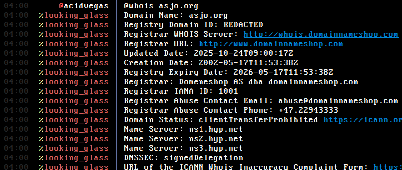
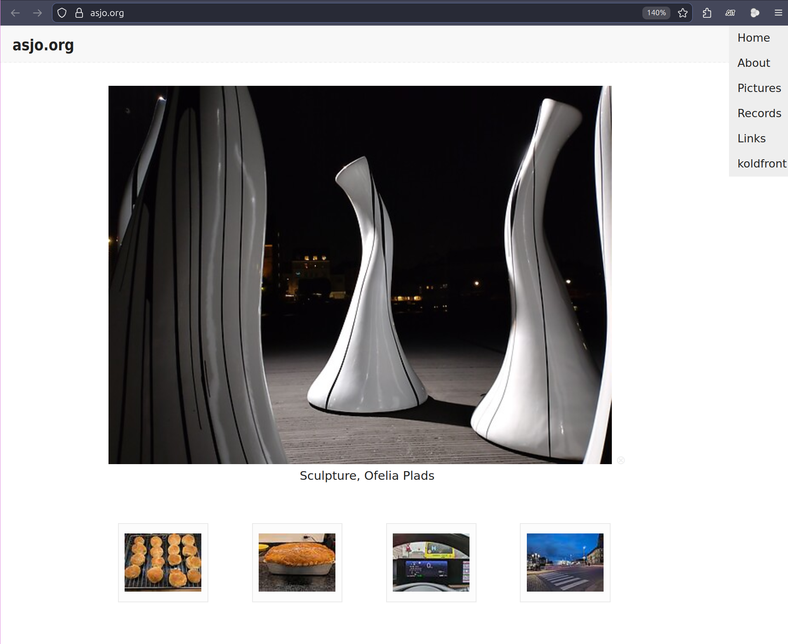
He has been documenting this exact phenomenon on his blog since March 2024 — four separate posts chronicling the same pattern I was seeing on my honeypots, two years before I ever set them up.
March 2024 — "Under attack?!": His home router started dropping 40-80% of packets. named was pegged at 100% CPU. A single IP in China was sending thousands of ANY requests for his own domain. His VPS hoster warned him about the traffic spike. When he blocked the IP, another one immediately took its place.
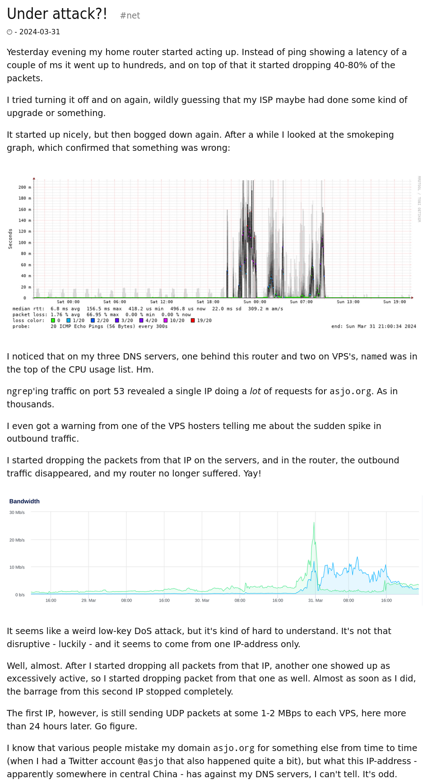
May 2024 — "DNS DoS again": Same thing, different IP, again from China. His jukebox kept rebooting because it couldn't ping the router. 998 out of 1000 packets on his network were ANY queries for asjo.org. He had to reboot the router just to access the firewall interface.
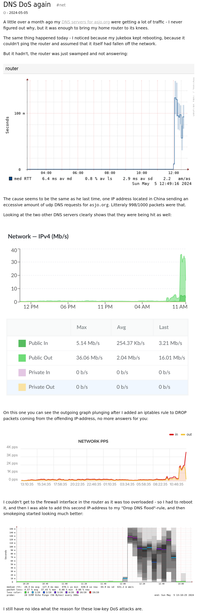
June 2024 — "Another DoS": Hit again. Router latency spiked, CPU maxed, VPS transfer quotas blown. Same pattern. He still had no idea what it was about.
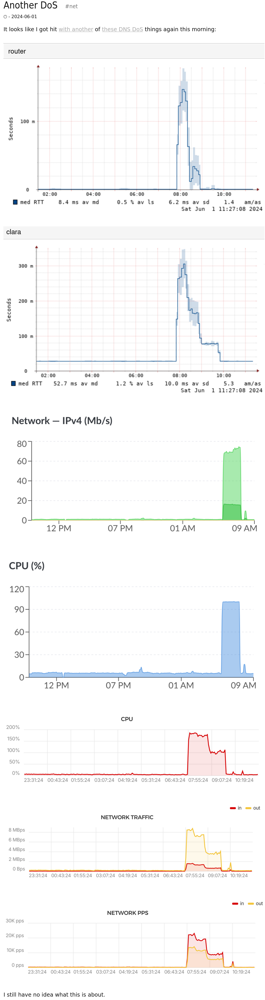
October 2024 — "Stupid DNS DoS again": He gave up. After months of blocking /8 networks and still getting hit with thousands of packets per second, he moved DNS for asjo.org to his registrar domæne.shop. A man who believes in self-hosting, forced off his own nameservers by a mystery flood that nobody can explain.
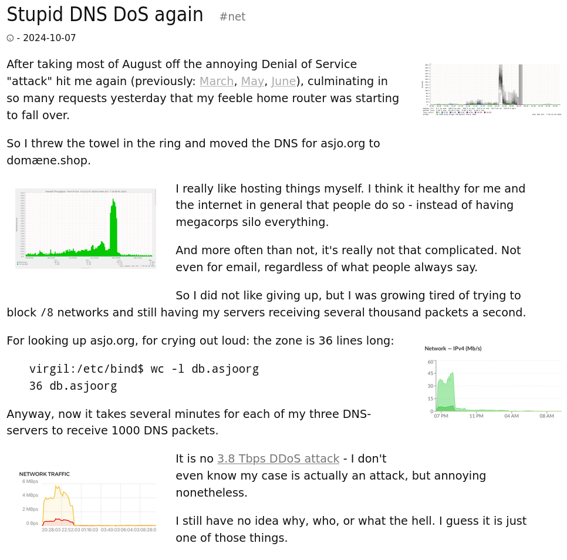
He wrote: "I really like hosting things myself. I think it healthy for me and the internet in general that people do so — instead of having megacorps silo everything." But the flood won.
I Emailed Him
I reached out to Adam directly. Here is his reply:
He has no idea either. But that last link he sent led me to something else.
Collateral Damage
In January 2026, Adam discovered that his employer's network — via Microsoft Defender SmartScreen — had blocked asjo.org entirely.
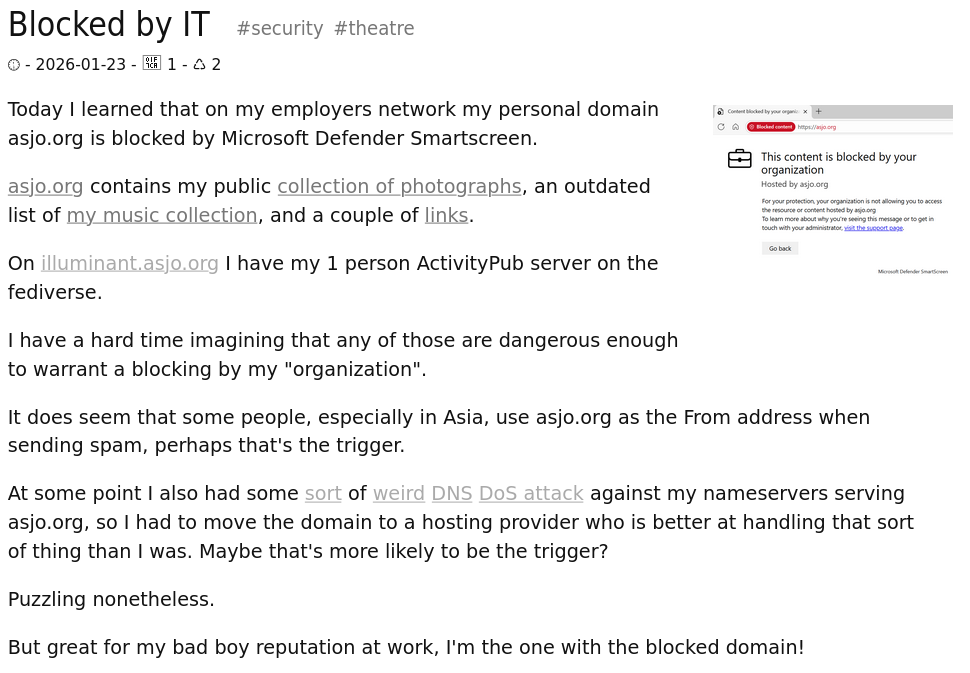
His personal domain, which contains a photo collection, a music list, and a few links, is now flagged as dangerous by Microsoft's threat intelligence. He also noted that people in Asia have been using asjo.org as a spoofed From address when sending spam. The DNS flood, the spam spoofing, the reputation damage — this one man's personal domain has become collateral in something he has no control over and no understanding of.
As he put it: "But great for my bad boy reputation at work, I'm the one with the blocked domain!"
Ranked #646 in the World
Akamai publishes a ranking of the top 10,000 domains by DNS query volume. I pulled the CSV and searched for asjo.org.
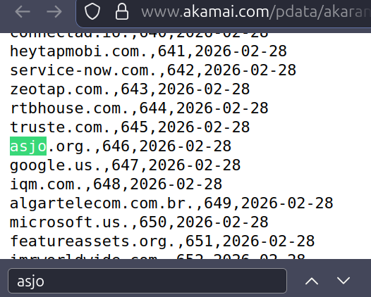
asjo.org is ranked #652 globally. Let that sink in. To put this in perspective, here are some of the domains it outranks:
asjo.org #652 x.com #671 telegram.org #689 ebay.com #719 intel.com #727 huawei.com #742 hotmail.com #760 discord.com #778 uber.com #836 dropbox.com #838 amazon.co.uk #893 python.org #906 booking.com #928 duckduckgo.com #962 slack.com #966 nvidia.com #968 oracle.com #973
A one-person Danish blog about bread and photographs is generating more DNS query volume than X (Twitter), Telegram, eBay, Discord, Uber, Dropbox, Slack, Nvidia, and Oracle. That is not organic traffic. The sheer volume required to outrank these platforms — some of the most visited sites on the internet — is staggering. Something is generating an astronomical number of DNS queries for this domain across the global internet.
This raises an interesting thought experiment: can you spoof your way into the top 1 million domains? Cloudflare, Akamai, and others publish these popularity rankings based on DNS query volume. If sheer volume of spoofed queries is enough to land a personal blog at #646 globally, what stops anyone from artificially inflating any domain into these lists? These rankings are used by security tools, threat feeds, and allowlists everywhere. We may have to put this to the test. 😈
Dataplane.org Sees It Too
Dataplane.org operates a network of sensors that observe unsolicited DNS queries — essentially the same thing my honeypot does, but at larger scale and run by operators for operators. They publish a report of type/name pairs observed from unsolicited DNS query attempts.
asjo.org appears in their current report:
dnstypename | ANY | asjo.org
This is independent, third-party confirmation. Dataplane's sensors, my honeypot cluster, my colleague's nameserver, and Adam's own infrastructure — all observing the same phenomenon, completely independently.
Corroboration
A colleague who operates his own independent nameserver grepped his logs after I mentioned this. He found 17 unique source IPs responsible for 1.4 million queries for ANY asjo.org on his server alone. These are the IPs, resolved via bgp.tools:
| ASN | IP | Prefix | CC | Organization |
|---|---|---|---|---|
| 14061 | 134.199.134.80 | 134.199.132.0/22 | US | DigitalOcean LLC |
| 152194 | 143.92.63.185 | 143.92.63.0/24 | HK | CTG Server Limited |
| 7018 | 162.237.225.67 | 162.224.0.0/12 | US | AT&T Enterprises, LLC |
| 16509 | 16.24.10.160 | 16.24.0.0/16 | US | Amazon.com, Inc. |
| 35819 | 178.73.75.196 | 178.73.72.0/22 | SA | Etihad Etisalat |
| 22773 | 184.187.48.149 | 184.187.48.0/20 | US | Cox Communications Inc. |
| 4760 | 220.246.52.55 | 220.246.32.0/19 | HK | HKT Limited |
| 749 | 33.44.22.33 | 33.0.0.0/8 | US | US Department of Defense |
| 215370 | 45.154.34.95 | 45.154.34.0/24 | NL | Wasabi Hosting |
| 5650 | 47.158.35.9 | 47.158.0.0/16 | US | Verizon (fka. Frontier) |
| 12849 | 5.29.14.10 | 5.29.14.0/24 | IL | Hot-Net internet services |
| 214320 | 5.83.140.209 | 5.83.140.0/24 | NL | Sergei Saliukov |
| 3462 | 60.251.162.117 | 60.251.162.0/24 | TW | HiNet (Chunghwa Telecom) |
| 7725 | 68.62.141.174 | 68.62.128.0/19 | US | Comcast Cable |
| 33287 | 76.124.213.36 | 76.124.212.0/22 | US | Comcast Cable |
| 20485 | 83.234.173.58 | 83.234.0.0/16 | RU | TransTeleCom JSC |
| 5607 | 90.205.213.241 | 90.192.0.0/11 | GB | Sky UK |
| 3215 | 90.76.50.172 | 90.76.0.0/16 | FR | Orange S.A. |
| 213537 | 92.242.165.242 | 92.242.165.0/24 | TR | Inception Game & Media Services |
| 22773 | 98.164.156.111 | 98.164.152.0/21 | US | Cox Communications Inc. |
Look at the diversity. US military. European residential ISPs. Asian telecom carriers. Middle Eastern mobile operators. Russian transit providers. Israeli broadband. Turkish gaming companies. Cloud providers. Small Dutch hosting shops. This is not a single botnet. This is not a single attacker. This is something distributed across the global internet at a scale that is difficult to explain.
What We Know
I don't have a clean answer for what is happening here. Nobody does — not me, not Adam, not my colleague, not the Dataplane.org operators. But here is what the evidence shows:
- DNS
ANYqueries forasjo.orgare being sent to nameservers across the internet at massive scale — enough to rank the domain #646 globally in Akamai's DNS rankings. - This has been happening for at least two years, documented independently by multiple observers across multiple continents.
- The source IPs span residential ISPs, cloud providers, DoD legacy address space, and international carriers across at least 12 countries.
- The target domain's zone file is 36 lines long and its
ANYresponse is 1,518 bytes — a poor choice for DNS amplification. - The pattern does not fit a typical DNS amplification DDoS — the duration is too long, the source diversity is too broad, the amplification factor is too low, and the use of DoD legacy address space makes no tactical sense for reflection.
- Blocking individual IPs causes immediate rotation to new sources, suggesting coordination or automation.
- The phenomenon is confirmed by Dataplane.org's independent sensor network.
- The collateral damage is real — Adam was forced off his own nameservers and his domain is now blocked by Microsoft Defender.
Some possibilities:
- Massively distributed botnet — A botnet with nodes across residential, enterprise, and government networks, all hardcoded to send
ANYqueries for a single domain. But whyasjo.org? And why for two years? And why would a botnet operator burn resources on a 36-line zone? - Misconfigured software — Some widely deployed application or appliance with a hardcoded or default DNS health check target of
asjo.org. A monitoring probe gone wrong at planetary scale. This would explain the residential ISP diversity — consumer routers, IoT devices, or embedded systems phoning home with the wrong query. - Research or measurement — An academic or government project studying DNS resolver behavior using
asjo.orgas a canary domain. The DoD involvement could support this, though the volume and collateral damage argue against any responsible research program. - A grudge that outlived its owner — My personal favorite theory. Someone Adam pissed off at some point rooted a box, wrote a spoofing script to flood DNS queries for his domain, and let it rip. Then they lost access to the box. But the script never stopped. It's still running, years later, on some forgotten compromised machine — an automated vendetta in limbo, spoofing
asjo.orginto the void long after whoever started it moved on or forgot it existed. - Something else entirely — The internet is weird. Sometimes the answer is boring. Sometimes it never comes. And sometimes a Danish man's personal blog ends up ranked between
truste.comandgoogle.usand nobody knows why.
If you run a nameserver, grep your logs for asjo.org. I'd bet money you'll find it.
As of this writing, the queries are still coming in. We are actively monitoring this across our honeypot cluster and the flood has not stopped:
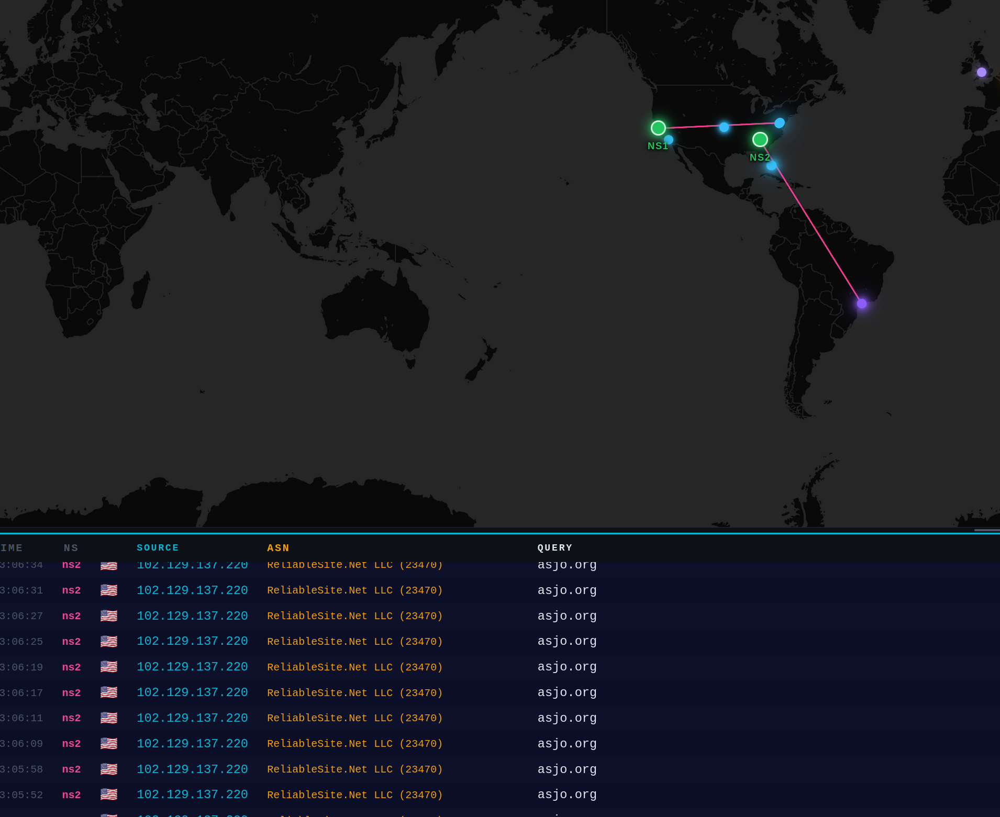
Every few seconds, another ANY query for asjo.org. Still going. Still unexplained.
Sources & References:
- Under attack?! — koldfront.dk, March 2024
- DNS DoS again — koldfront.dk, May 2024
- Another DoS — koldfront.dk, June 2024
- Stupid DNS DoS again — koldfront.dk, October 2024
- Blocked by IT — koldfront.dk, January 2026
- DNS Type/Name Report — Dataplane.org
- Akamai DNS Traffic Rankings
- BGP.tools — IP/ASN lookups
If you run a nameserver and have logs showing queries for asjo.org, I would love to compare notes. Any intel on this mystery is welcome — reach out at acid.vegas@acid.vegas or join us on IRC at irc.supernets.org in #war, our recon, hacking, and threat intelligence channel.
Update — 2026-03-03: Since publishing this article, a network operator responsible for one of the source IP ASNs listed in the corroboration table reached out to confirm that the traffic is not legitimate. The queries for asjo.org originating from their address space are not coming from their infrastructure — the source IPs are being spoofed. We suspected this from the beginning given the source diversity and the presence of DoD legacy space, but this is the first direct confirmation from an operator on the other end. The IPs sending these queries are forged.